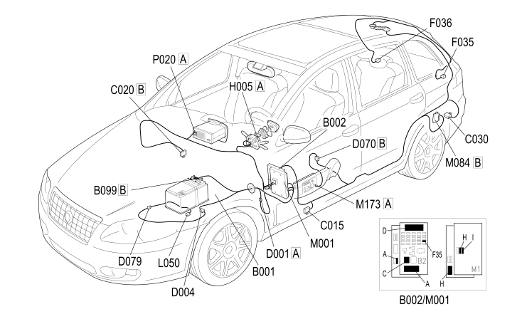

E2022 REVERSING LIGHTS - COMPONENT LOCATION
- Path
- Electrical equipment > 1 ELECTRICAL FUNCTIONS > E20 EXTERIOR LIGHTING > E2022 REVERSING LIGHTS > E2022 REVERSING LIGHTS - COMPONENT LOCATION
- Kind
- component location drawing
- Applies to
- engines: 2.2; all production periods; only with equipment: AUTOMATIC TRANSMISSION
- Interactive page
- https://sloeber94.github.io/elrnDB-fCrm/en/#/194001338
Applies to: engines: 2.2; all production periods; only with equipment: AUTOMATIC TRANSMISSION

Component code | Description | Reference to the assembly |
|---|---|---|
JUNCTION UNIT UNDER DASHBOARD | ||
MAXI FUSE BOX ON BATTERY | ||
DRIVER'S DASHBOARD EARTH | ||
PASSENGER SIDE DASHBOARD EARTH | ||
LEFT REAR EARTH | ||
FRONT/DASHBOARD COUPLING | ||
FRONT/ENGINE COUPLING | ||
TRANSMISSION SENSORS COUPLING | ||
LEFT REAR LIGHT CLUSTER (MOVING SECTION ON BOOT LID) | ||
RIGHT REAR LIGHT CLUSTER (MOVING SECTION ON BOOT LID) | ||
STEERING COLUMN SWITCH UNIT | ||
AUTOMATIC TRANSMISSION SOLENOID VALVES | ||
BODY COMPUTER | ||
PARKING SENSOR CONTROL UNIT | ||
DRIVE ALIGNMENT NODE | ||
RADIO |
Topics linked from this page (23)
- 2130B AUTOMATIC TRANSMISSION COMPONENTS
- 5505A MULTI-FUNCTION COMPONENTS
- 5530B BATTERY AND LEADS
- 5540A LIGHTING
- 5550A STALK UNIT
- 5570T CAR RADIO AND CAR TELEPHONE
- 5580H PARKING OBSTACLE DETECTION DEVICE
- B002 JUNCTION UNIT UNDER DASHBOARD
- B099 MAXI FUSE BOX ON BATTERY
- C015 DRIVER'S DASHBOARD EARTH
- C020 PASSENGER SIDE DASHBOARD EARTH
- C030 LEFT REAR EARTH
- D001 FRONT/DASHBOARD COUPLING
- D004 FRONT/ENGINE COUPLING
- D079 TRANSMISSION SENSORS COUPLING
- F035 LEFT REAR LIGHT CLUSTER (MOVING SECTION ON BOOT LID)
- F036 RIGHT REAR LIGHT CLUSTER (MOVING SECTION ON BOOT LID)
- H005 STEERING COLUMN SWITCH UNIT
- L050 AUTOMATIC TRANSMISSION SOLENOID VALVES
- M001 BODY COMPUTER
- M084 PARKING SENSOR CONTROL UNIT
- M173 DRIVE ALIGNMENT NODE
- P020 RADIO